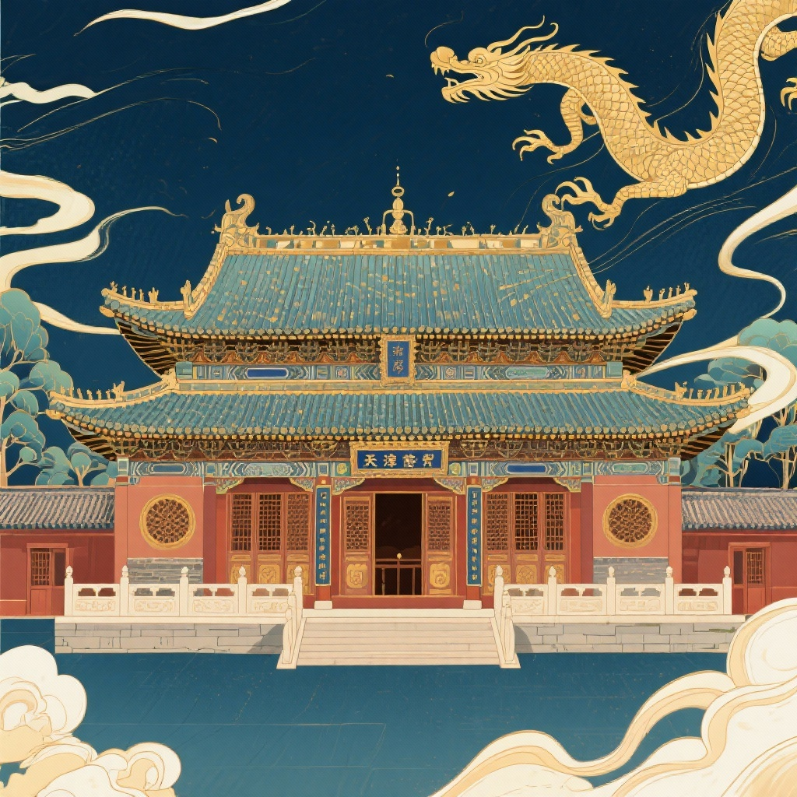
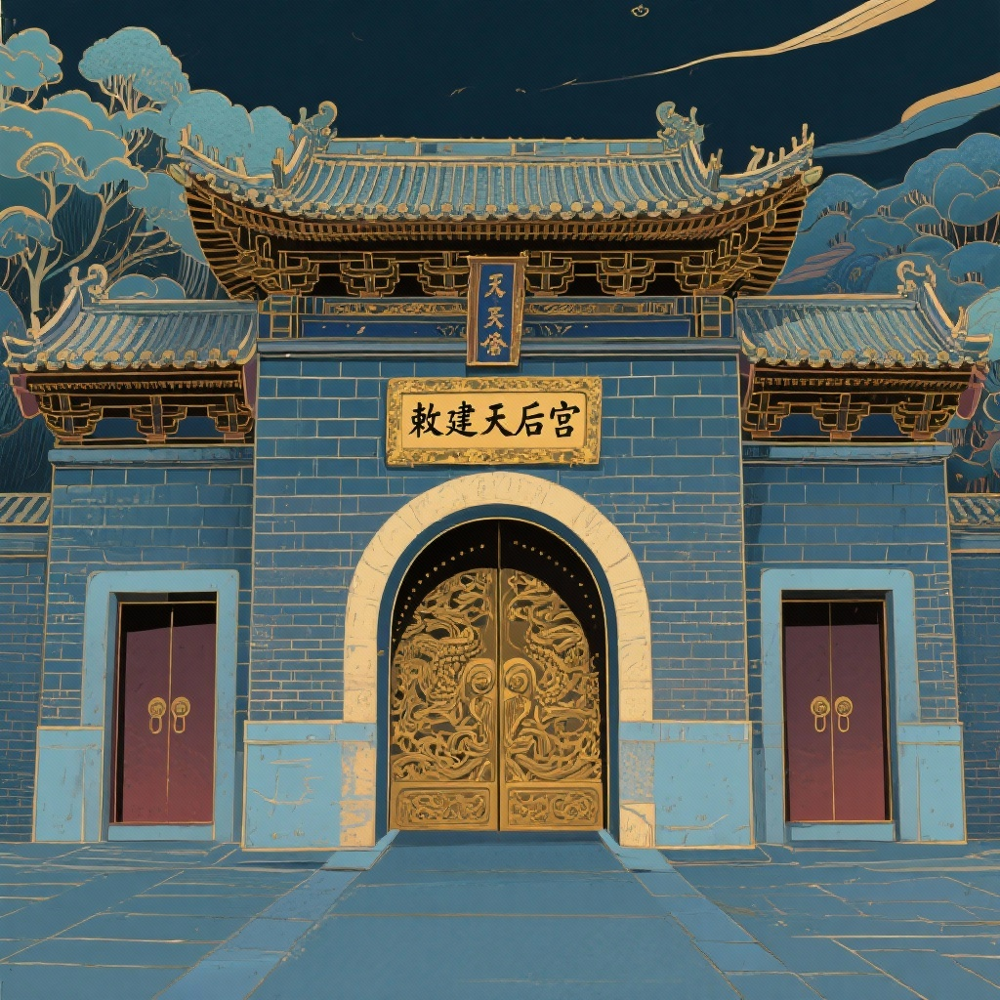
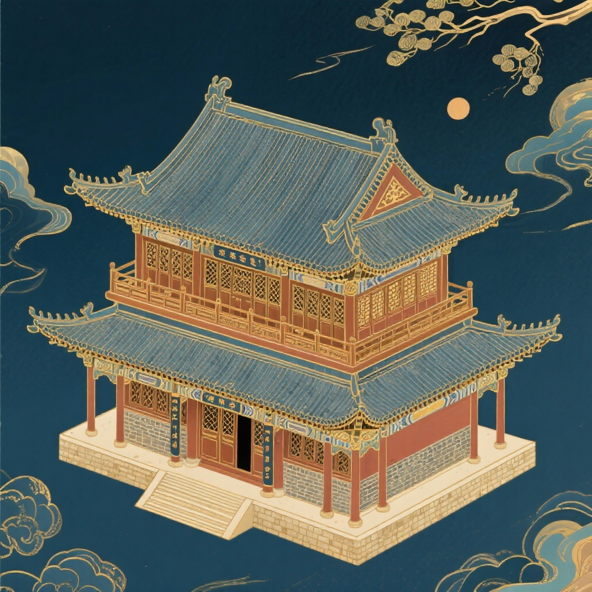

庙宇格局与建筑营造
坐西朝东，面迎海河，严格遵循宋元明清沿袭之海神祭祀建筑格局
单檐庑殿接抱厦的宏伟主殿
正殿是天后宫的核心建筑，高大宏伟，面阔三间，进深三间，七檩单檐庑殿顶。前面接卷棚顶抱厦，后面接悬山顶凤尾殿，三殿浑然一体。
殿内正中供奉高达2.7米的天后娘娘贴金塑像，头戴凤冠，身披霞帔，神态庄重慈祥。殿内还悬挂有清代乾隆皇帝御赐横额与历代官商题赠匾联。

整砖镂雕“敕建天后宫”
山门为清代砖木混合结构建筑，中开圆形拱门，两旁开长方形便门。门额采用整块巨青砖精工镂雕“敕建天后宫”五字，笔势雄健。
山门前高耸两根高达二十余米的幡杆，当年桅杆悬挂明灯，为海河及三岔河口往来船只导航，也是天后宫标志性的外景景观。

两层砖木楼阁与道藏典籍
藏经阁位于正殿后方，是一座二层砖木结构高台楼阁。歇山屋顶覆灰瓦，脊饰琉璃脊兽。
当年阁内曾珍藏明代正统年间编修的《正统道藏》五千余卷，以及诸多天津古海运地图与碑刻拓片，具有极高的文献史料价值。

老戏楼与国家级非遗“皇会”
山门正对面的古戏楼，是酬神演戏的重要场所。每年农历三月二十三“天后诞辰”，天津举行极盛大的“皇会”巡游。
各道法鼓会、高跷会、重刀会、狮子会争奇斗艳，锣鼓喧天，百戏杂陈，是华北地区保存最为完备的大型传统民间信仰狂欢节日。
国家级非遗·天津皇会
数百年香火繁衍，形成融合了祈福、武术、杂技、曲艺等为一体的津门大型民俗文化活态奇观。
六百年香火风华
元廷敕建天妃宫，护佑海运漕粮入京，确立了直沽作为北方海运枢纽的地位。
元代敕建天妃宫，护佑漕运粮道。
大元立庙明成祖朱棣遣内官重修天妃宫，赐造祭文，使天后宫规制更为宏敞严整。
天妃晋封为“天后”，康熙帝御笔赐额，乾隆亲临降香，民间出资设立百道香会，皇会盛况空前。
成立天津民俗博物馆，开辟为古文化街核心景区，列为全国重点文物保护单位。
📍 游览攻略与实用指南
门票：10元/人（古文化街步行街免费，进庙参观收取象征性文保门票）
开放时间：09:00 - 17:00（16:30停止检票入内）
地址：天津市南开区古文化街中段80号
地铁：地铁2号线【东南角站】D出口，步行约800米穿过古文化街牌楼即达
水上：可搭乘海河游船在【古文化街码头】下船
泥人张彩塑总店、杨柳青年画世家作坊
古文化街小吃：煎饼馃子、熟梨糕、天津大麻花、茶汤